Furano
Furano · Hokkaido
Furano
Highlighted on the Hokkaido map.
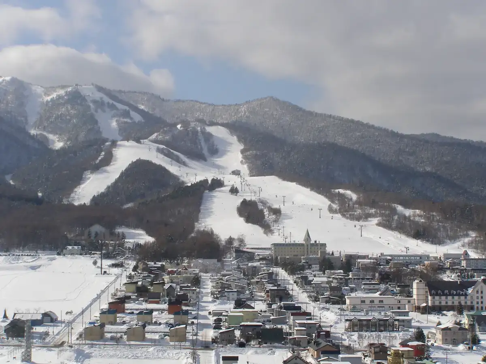
Stay
JANUS villa Furano（ジェイナスヴィラフラノ）
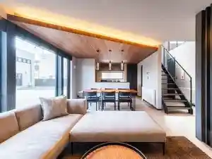
Janus Villa Furano ( Jieinasuvirafurano )
ホテルサンフラトン
Hoterusanfuraton
Hostel TOMAR
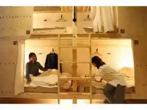
Hostel Tomar
Ak star ホテル
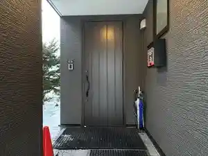
Ak Star Hoteru
Private Villa 雪の音
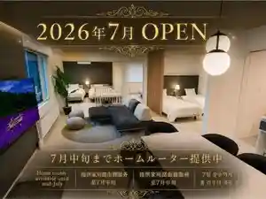
Private Villa Yuki No Oto
石邸 富良野
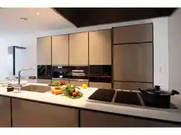
Ishi Tei Furano
民宿あきば
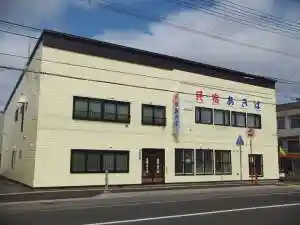
Minshuku Akiba
栞FURANO
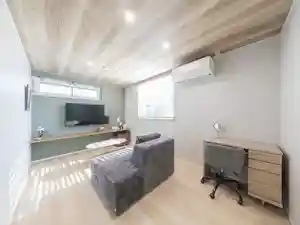
Shiori Furano
天然温泉 紫雲の湯 ラビスタ富良野ヒルズ(ドーミーインチェーン)
Tennen Onsen Shiun No Yu Rabisuta Furano Hiruzu ( Doomiiincheen )
ＦＵＲＡＮＯ ＮＡＴＵＬＵＸ ＨＯＴＥＬ
F U R A N O N A T U L U X H O T E L
Furano Trailer Village 傳-den-
Furano Trailer Village Den -Den
JR Mobile Inn Furano (JRモバイル イン フラノ)
Jr Mobile Inn Furano (Jr Mobairu In Furano )
Dining
A bientot furano
A Bientot Furano
濱焼北海道魚萬 富良野店
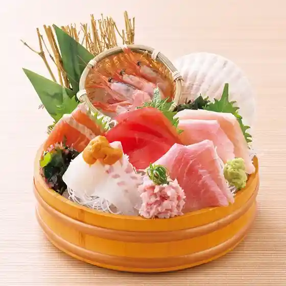
Hamayaki Hokkaidou Sakana Man Furano Mise
ほっかきや ふらの店
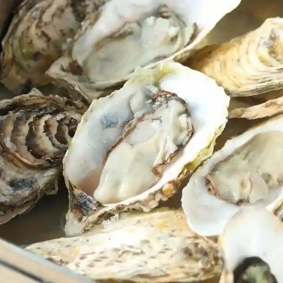
Hokkakiya Furano Mise
Locanda Furanora
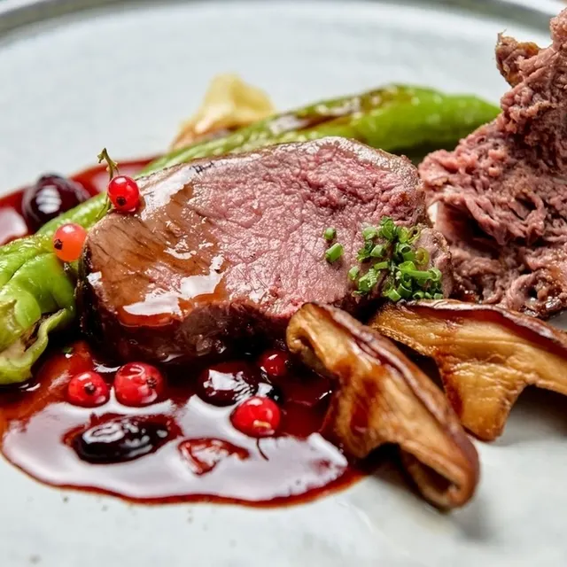
Locanda Furanora
GYORO GYORO ふらの店
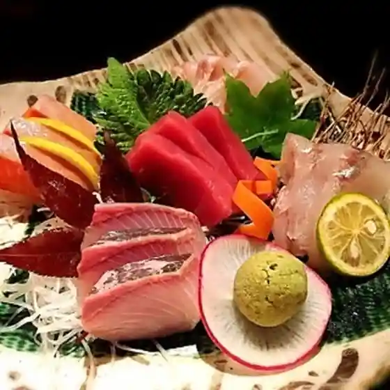
Gyoro Gyoro Furano Mise
ふらの家本町酒場
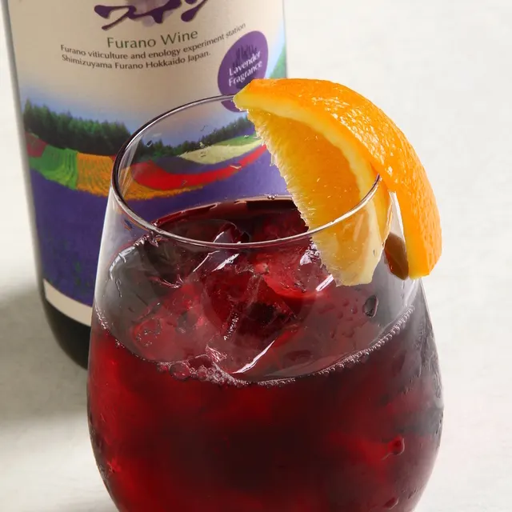
Furano Kahon Machi Sakaba
富良野 侘助
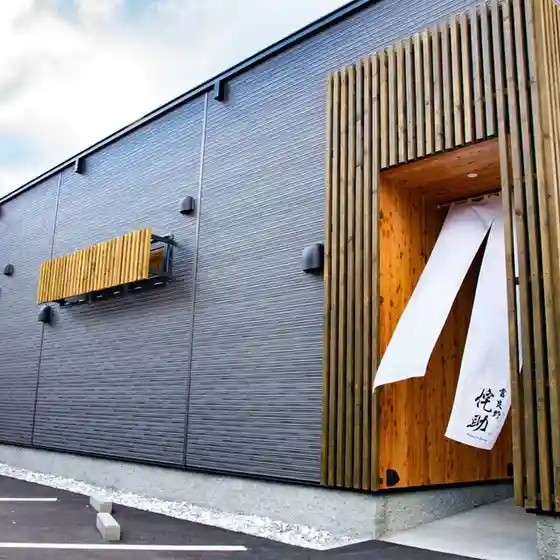
Furano Wabisuke
小樽茶屋 里 富良野店
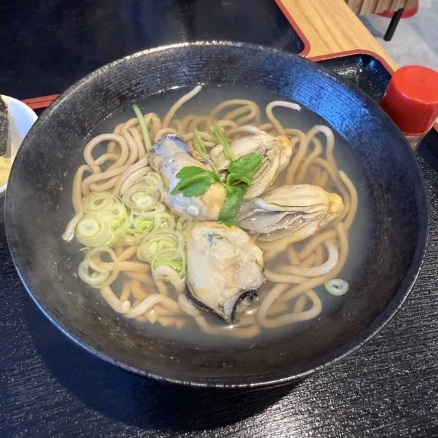
Otaru Chaya Sato Furano Mise
北燈
Kita Tou
フラノバーガー
Furanobaagaa
菓子工房フラノデリス
Kashi Koubou Furanoderisu
ナチュラックスカフェ
Nachurakkusukafe
こなやき処 たつき
Konayaki Tokoro Tatsuki
Pieno
Pieno
ラーメン山岡家 富良野店
Raamen Yamaoka Ie Furano Mise
ナポレオン食堂
Naporeon Shokudou
エゾアムプリン製造所
Ezoamupurin Seizousho
雪のドーナツ
Yuki No Doonatsu
回転寿司 トピカル
Kaitenzushi Topikaru
大衆串横丁 てっちゃん 富良野店
Taishuu Kushi Yokochou Tetchan Furano Mise
ふじ家
Fuji Ie
FURANO BAR
Furano Bar
山部ドライブイン
Yamabe Doraibuin
友美
Yumi